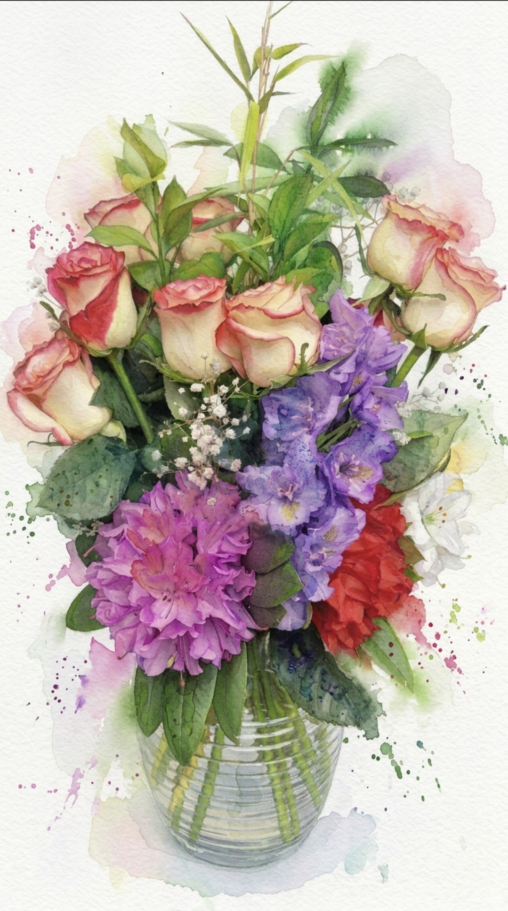
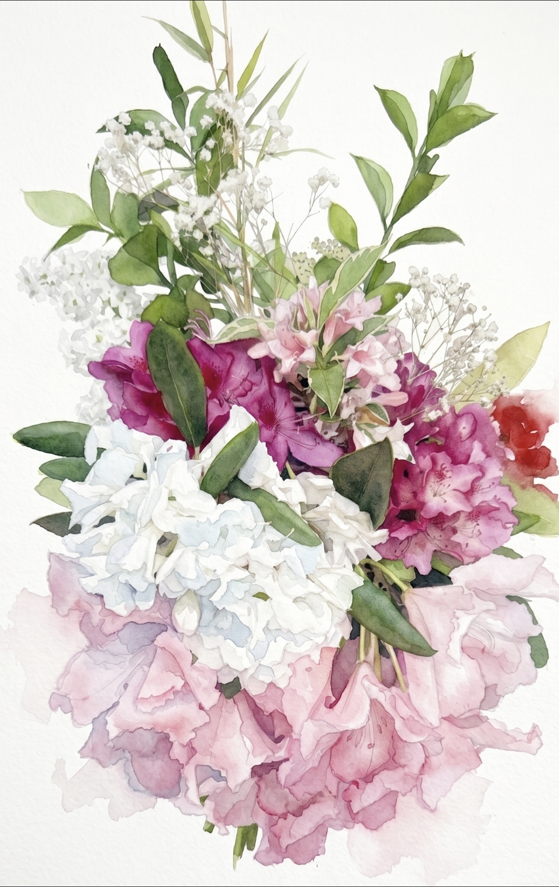

A small studio practice devoted to garden-gathered, season-led arrangements — where every stem earns its place.

Each arrangement begins in the garden, before the sun is high. What I bring back is what asks to be brought — the rhododendron in its third bloom, a stem of lilac that survived the wind, baby's breath drying gracefully on the vine.
My work is not florist work. It is gathering, listening, composing. The vase is the last consideration; the flower's gesture comes first.
Two arrangements from this season's garden — captured in the studio kitchen where most of my work begins and ends.

Every arrangement I make is also painted. The watercolors slow me down — they teach me what I missed when I was only arranging. A record of what bloomed and what it looked like before it didn't.
Original watercolor studies available alongside fresh commissions.
A standing order. Fresh flowers from my garden, arranged in your home or office once a week. No two arrangements alike.
Small weddings, intimate dinners, milestone celebrations. I take on a few each season and pour everything into them.
Hand-painted portraits of your own bouquet, your wedding flowers, or a meaningful arrangement — kept long after the petals fall.
Gin doesn't deliver flowers. She delivers a small held breath — the kind of arrangement you keep walking back to all afternoon.
I take on a small number of commissions each season. Tell me a little about the occasion, the room, the season — and I'll write back with what feels right.